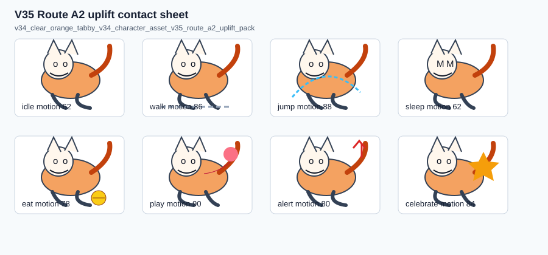
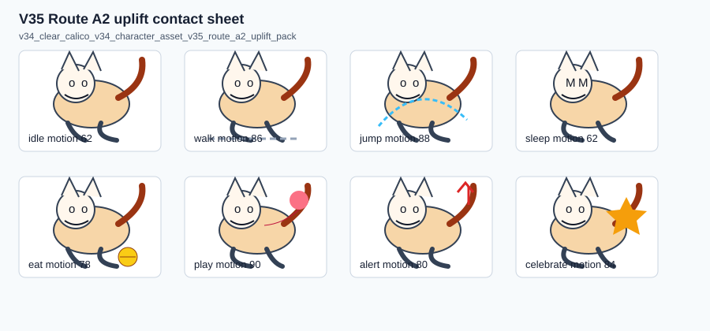

v34_clear_orange_tabby

v34_clear_orange_tabby_v34_character_asset_v35_route_a2_uplift_pack
本报告使用本地真实命名样本和 headless derivative evidence，不启动可见桌面窗口，不抢占用户焦点。
V34 生成候选进入 V35 rubric、Route A2 uplift、Route B source boundary、同样本比较、产品 UX evidence 和 final route decision。
Route A2 uplift 已生成命名样本候选并通过 preview/apply/rollback；Route B 没有专业资产，按边界记录为 blocked/not executed。

v34_clear_orange_tabby_v34_character_asset_v35_route_a2_uplift_pack

v34_clear_calico_v34_character_asset_v35_route_a2_uplift_pack
| Candidate | Sample | QA | Preview | Apply | Rollback | Failed Blocked |
|---|---|---|---|---|---|---|
| v34_clear_orange_tabby_v34_character_asset_v35_route_a2_uplift_pack | v34_clear_orange_tabby | passed | ready | applied | rolled_back | 否 |
| v34_clear_calico_v34_character_asset_v35_route_a2_uplift_pack | v34_clear_calico | passed | ready | applied | rolled_back | 否 |
| v34_clear_silver_tabby_v34_character_asset_v35_transform_only_negative | v34_clear_silver_tabby | failed | blocked | blocked | not-run | 是 |
| v34_clear_silver_tabby_v34_character_asset_v35_missing_action_negative | v34_clear_silver_tabby | failed | blocked | blocked | not-run | 是 |
Route A2 uplift named-sample product UX evidence passed scoped.
Route B 仍需真实专业辅助资产后才能比较是否带来更好的视觉结果；本报告不声明任意猫自动生成或 provider 集成。